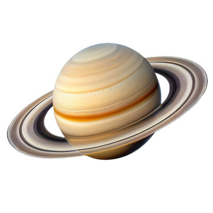
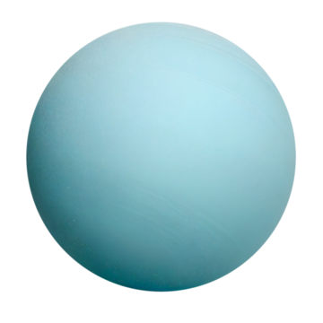
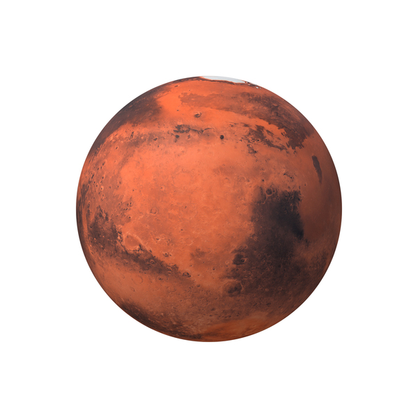
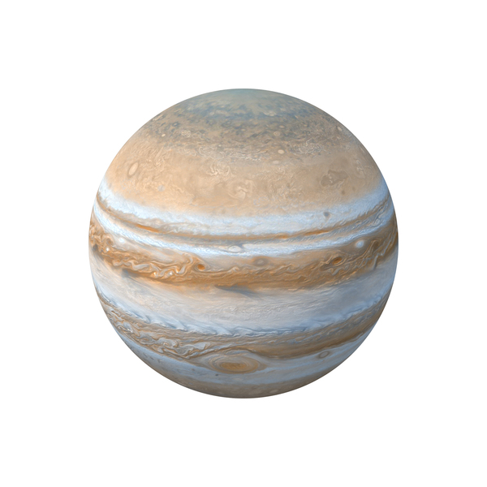

| Saturn | Uranus | Mars | Jupiter | |
|---|---|---|---|---|
| Images of The Most Interesting Planets |  |  |  |  |
| Fact #1 | Saturn mass is 568(10^24 kg) | Uranus mass is 86.8(10^24 kg) | Mars mass is 0.642(10^24 kg) | Jupiter mass is 1898(10^24 kg) |
| Fact #2 | Saturn diameter is 120,536 km | Uranus diameter is 51,118 km | Mars diameter is 6792 km | Jupiter diameter is 142,984 km |
| Fact #3 | The density of Saturn is 687(kg/m^3) | The density of Uranus is 1270(kg/m^3) | The density of Mars is 3934(kg/m^3) | The density of Jupiter is 1326(kg/m^3) |
| Fact #4 | Saturn has 83 moons | Uranus has 27 moons | Mars has 2 moons | Jupiter has 92 moons |
| Fact #5 | Saturn has a ring system | Uranus has a ring system | Mars doesn't have a ring system | Jupiter has a ring system |
| Fact #6 | Saturn has a global magnetic field | Uranus has a global magnetic field | Mars doesn't have a global magnetic field | Jupiter has a global magnetic field |
| Fact #7 | Saturn distance from the sun is 1432.0(10^6 km) | Uranus distance from the sun is 2867.0(10^6 km) | Mars distance from the sun is 228.0(10^6 km)(10^6 km) | Jupiter distance from the sun is 778.5(10^6 km) |